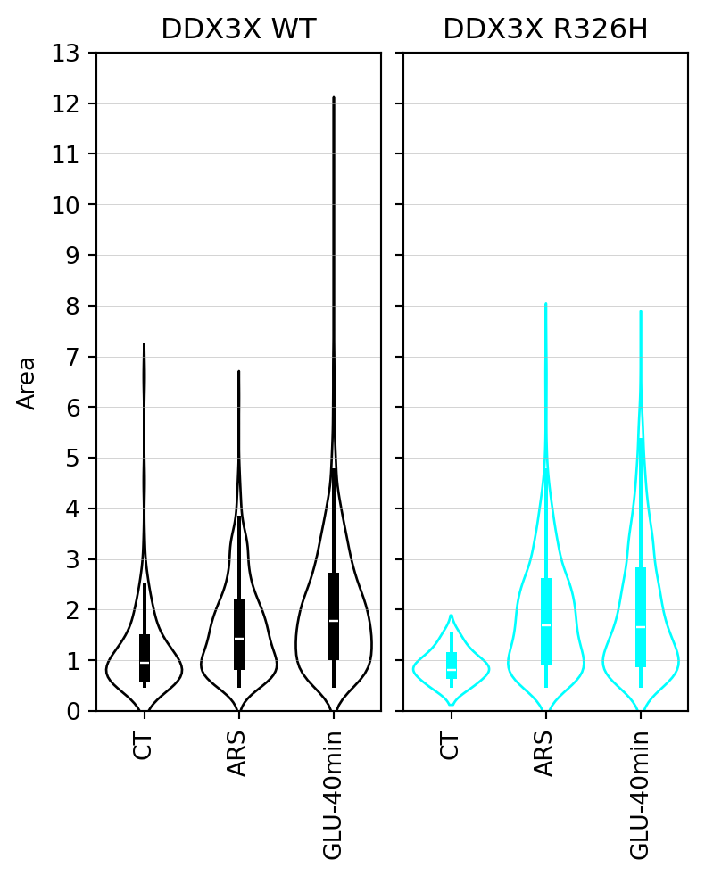
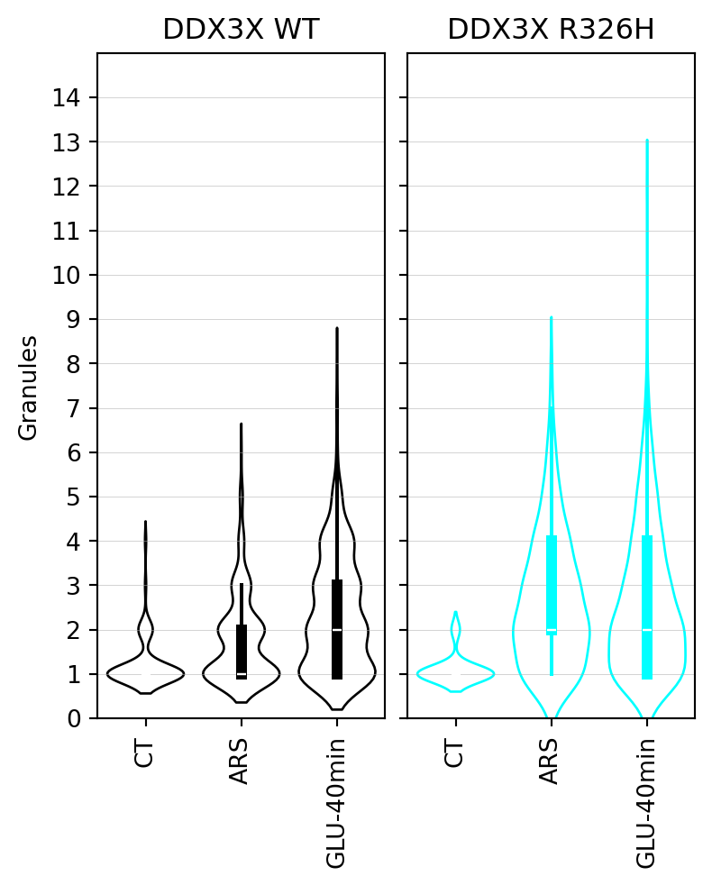
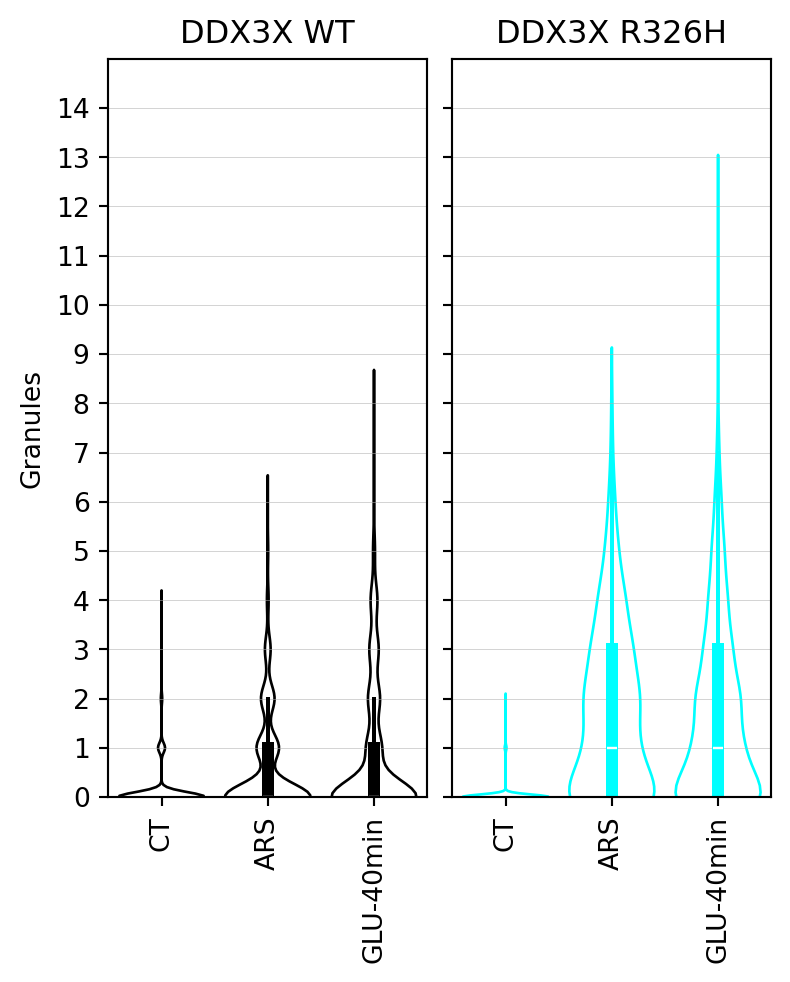
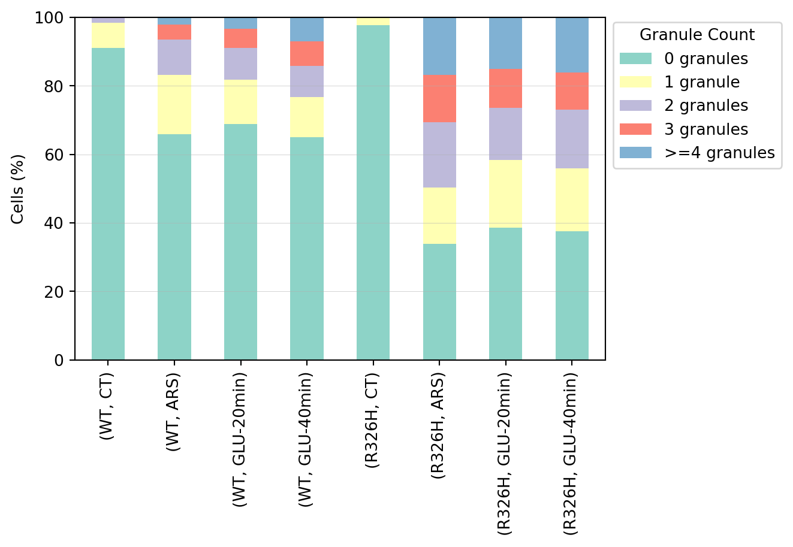

Code
import pandas as pd
import matplotlib.pyplot as plt
import seaborn as snsimport pandas as pd
import matplotlib.pyplot as plt
import seaborn as snscells_df = pd.read_csv("output/granules_per_cell.csv")
granules_df = pd.read_csv("output/granule_area.csv")fig, axs = plt.subplots(1,2, figsize=(4,5), sharey=True, constrained_layout=True)
axs[0].set_title('DDX3X WT')
axs[1].set_title('DDX3X R326H')
# xlabels = ['CT', 'ARS', 'GLU-20min', 'GLU-40min']
xlabels = ['CT', 'ARS', 'GLU-40min']
sns.violinplot(data=granules_df[granules_df.group == 'WT'],
x='treatment', y='area',
fill=False,
inner='box',
ax=axs[0],
order=xlabels,
color='k',
density_norm='width',
linewidth=1)
sns.violinplot(data=granules_df[granules_df.group == 'R326H'],
x='treatment', y='area',
fill=False,
inner='box',
ax=axs[1],
order=xlabels,
color='cyan',
density_norm='width',
linewidth=1)
for ax in axs:
ax.set_xlabel('')
ax.set_ylabel('Area')
ax.set_yticks(range(0,14))
ax.set_ylim(0,13)
ax.set_xticklabels(xlabels, rotation=90)
ax.grid(axis='y', linewidth=.2)
plt.savefig("plots/stress_granules_area.png")
plt.savefig("plots/stress_granules_area.svg")
fig, axs = plt.subplots(1,2, figsize=(4,5), sharey=True, constrained_layout=True)
axs[0].set_title('DDX3X WT')
axs[1].set_title('DDX3X R326H')
xlabels = ['CT', 'ARS', 'GLU-40min']
sns.violinplot(data=cells_df[(cells_df.group == 'WT')&(cells_df.granule_count > 0)],
x='treatment', y='granule_count',
fill=False,
inner='box',
ax=axs[0],
order=xlabels,
color='k',
density_norm='width',
# width=2,
linewidth=1)
sns.violinplot(data=cells_df[(cells_df.group == 'R326H')&(cells_df.granule_count > 0)],
x='treatment', y='granule_count',
fill=False,
inner='box',
ax=axs[1],
order=xlabels,
color='cyan',
density_norm='width',
# width=2,
linewidth=1)
for ax in axs:
ax.set_xlabel('')
ax.set_ylabel('Granules')
ax.set_yticks(range(0,15))
ax.set_ylim(0,15)
ax.set_xticklabels(xlabels, rotation=90)
ax.grid(axis='y', linewidth=.2)
plt.savefig("plots/stress_granules_per_cell_wout_zeros.png")
plt.savefig("plots/stress_granules_per_cell_wout_zeros.svg")
fig, axs = plt.subplots(1,2, figsize=(4,5), sharey=True, constrained_layout=True)
axs[0].set_title('DDX3X WT')
axs[1].set_title('DDX3X R326H')
xlabels = ['CT', 'ARS', 'GLU-40min']
sns.violinplot(data=cells_df[cells_df.group == 'WT'],
x='treatment', y='granule_count',
fill=False,
inner='box',
ax=axs[0],
order=xlabels,
color='k',
density_norm='width',
linewidth=1)
sns.violinplot(data=cells_df[cells_df.group == 'R326H'],
x='treatment', y='granule_count',
fill=False,
inner='box',
ax=axs[1],
order=xlabels,
color='cyan',
density_norm='width',
linewidth=1)
for ax in axs:
ax.set_xlabel('')
ax.set_ylabel('Granules')
ax.set_yticks(range(0,15))
ax.set_ylim(0,15)
ax.set_xticklabels(xlabels, rotation=90)
ax.grid(axis='y', linewidth=.2)
plt.savefig("plots/stress_granules_per_cell.png")
plt.savefig("plots/stress_granules_per_cell.svg")
# Create categories for different granule counts
sns.set_palette('Set3')
def categorize_granules(count):
if count == 0:
return '0 granules'
elif count == 1:
return '1 granule'
elif count == 2:
return '2 granules'
elif count == 3:
return '3 granules'
# elif count == 4:
# return '4 granule'
else:
return ">=4 granules"
# Add category column
cells_df['granule_category'] = cells_df['granule_count'].apply(categorize_granules)
# Calculate percentages for each group and category
category_percentages = cells_df.groupby(['group', 'treatment', 'granule_category']).size().unstack()
category_percentages = category_percentages.div(category_percentages.sum(axis=1), axis=0) * 100
# category_percentages = category_percentages.sort_values('group', key=lambda x: pd.Categorical(x, categories=['CT', 'ARS', 'GLU-20min', 'GLU-40min'], ordered=True))
# Create stacked bar plotplt.grid(axis='y', linewidth=.2)2, 6))
category_percentages = category_percentages.sort_values('treatment', key=lambda x: pd.Categorical(x, categories=['CT', 'ARS', 'GLU-20min', 'GLU-40min'], ordered=True)).sort_values('group', ascending=False)
category_percentages.plot(kind='bar', stacked=True)
# plt.xticks(rotation=45, ha='right')
plt.ylabel('Cells (%)')
# plt.xlabel('Group')
plt.legend(title='Granule Count', bbox_to_anchor=(1.0, 1.01), loc='upper left')
plt.tight_layout()
plt.xlabel('')
plt.ylim(0,100)
plt.grid(axis='y', linewidth=.2)
plt.savefig("plots/cells_with_stress_granules.png")
plt.savefig("plots/cells_with_stress_granules.svg")